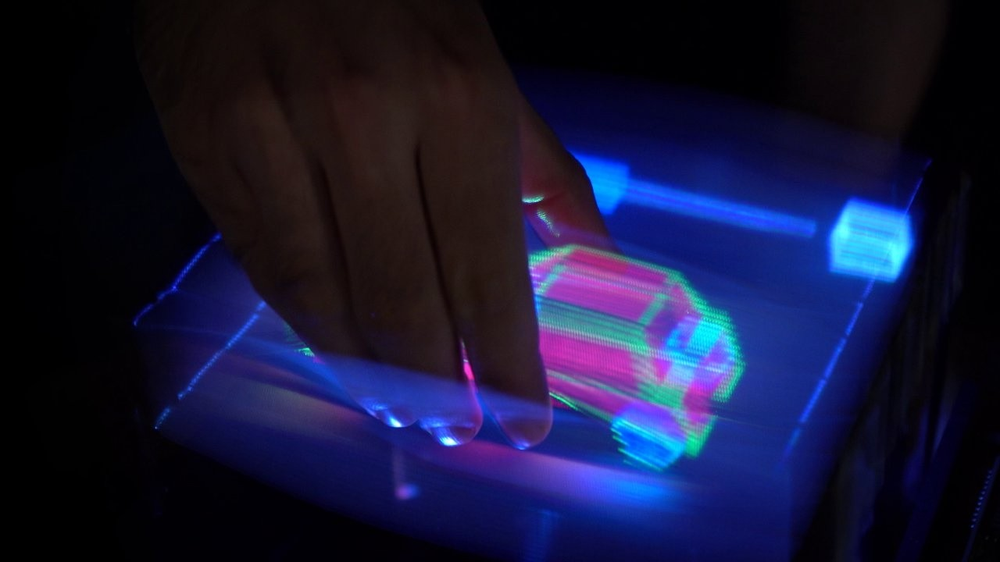

Light Wave Reconstruction
Records light's intensity and phase to recreate the original scene's 3D appearance.
Last updated 3 mins ago

Volumetric & Spatial Depth
Creates images with real depth, appearing suspended in space, not just flat.
Last updated 3 mins ago
Multi-Angle Viewing
Viewers can walk around the projection and see it realistically shift, unlike 2D photos.
Last updated 3 mins ago